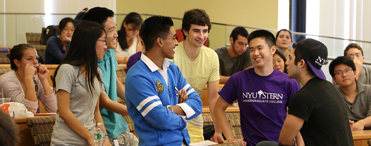
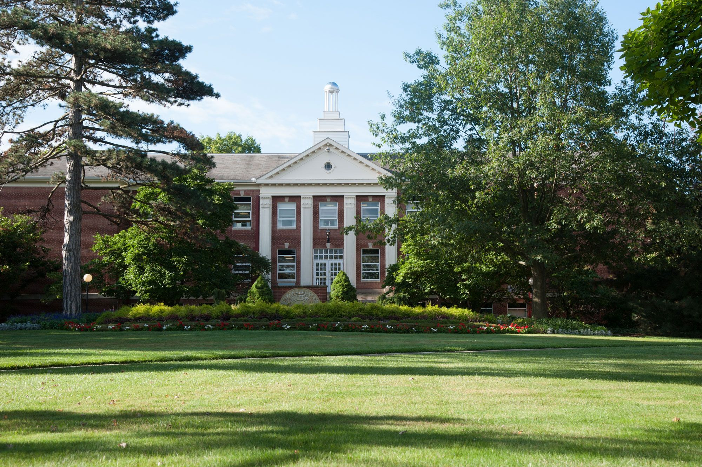

Academics
Creative University education is not a narrow path that students follow from Point A to Point Z.
We encourage our students to explore the academic landscape, venturing into unfamiliar fields of knowledge and, perhaps, discovering new passions that will take them in a different direction altogether. Along the way, faculty members help guide them, and fellow students offer diverse perspectives that can shed new light on the path. We also encourage our students to travel literally, by going abroad for study, research, or work.
By nurturing this spirit of inquiry, Creative aims to prepare global citizens who are instilled with a life-long love of learning.
At Creative, we view college as a time for students to explore, exercise curiosity, and discover new interests and abilities. We provide students with an immersive, collaborative, and inspiring environment where they can develop a broadly informed, highly disciplined intellect that will help them be successful in whatever work they finally choose.
Our students graduate with the values and knowledge they need to pursue meaningful work, find passion in life-long learning, and lead successful and purposeful lives.
Creative offers advanced degrees through its Graduate School of Arts & Sciences and 12 professional schools. Browse the organizations below for information on programs of study, academic requirements, and faculty research.
Creative has well over 100 departments and programs in a wide range of disciplines.
We empower you to discover your interests and pursue your passions while studying at Creative. Career Services can be a partner in your explorations, including through one-on-one guidance to help you plan your goals and achieve career success.

Step inside a virtual Lion classroom and learn from some of our most renowned faculty members. Lion offers online learning opportunities for a vast and global audience.